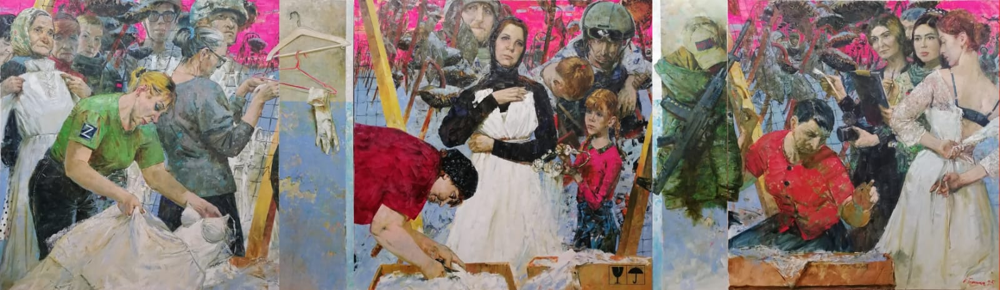

02
02

03
Ксения Чжу — российская художница, яркий представитель современной петербургской академической школы. Родилась в 1985 году в Кемерово. Её путь в искусстве начался с классической базы в Кемеровском художественном училище. Решающим этапом стало обучение в Санкт-Петербургской академии художеств имени Ильи Репина, которую она окончила в 2012 году в мастерской монументальной живописи под руководством профессора В.В. Соколова. Ксения представляет тип «художника-гражданина». Её творчество неразрывно связано с современными историческими событиями и гуманистическими ценностями. Вместе с супругом, китайским художником Чжу Лэем, она формирует уникальный творческий тандем, объединяющий русскую академическую традицию и глубокое внимание к человеческой судьбе в переломные моменты истории.
Ксения Чжу — приверженец реалистической школы с сильным академическим фундаментом.
Основной медиум — масляная живопись на холсте. Она мастерски владеет многослойным письмом, что позволяет добиваться глубины цвета и реалистичности фактур (кожи, ткани, бетона). Стиль можно охарактеризовать как «суровый реализм» в современной интерпретации. В работах нет излишней декоративности; акцент делается на психологизме и монументальности композиции.
Часто использует крупные планы и фронтальное построение фигур, что придаёт её героям внутреннюю силу и неподвижность, характерную для иконописи или античной скульптуры. В работах на военную и социальную тематику преобладают сдержанные, приземлённые тона — охра, серый, глубокий коричневый.
[Интервью: Кивилева Злата]